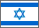
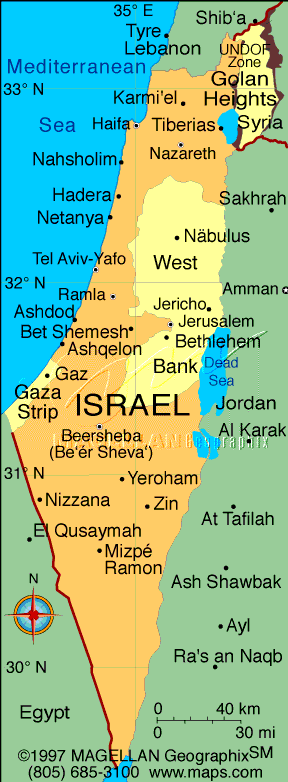

 David Bar-Tzur

Flag: World flag database.
Map: Maps.com - "search" for country, then "Digital Map Graphics".
For a quick, interesting resource for facts about this and other countries,
try Mystic Planet - The New Age directory of Planet Earth.
 1. Namir, L., Sela, I., Rimor, M. and Schlesinger, I. M. (1979). Dictionary of sign language of the Deaf in Israel. Jerusalem: Ministry of Social Welfare.
2. Savir, C. (ed.) (1992). Gateway to Israeli Sign Language. Tel Aviv: The Association of the Deaf in Israel.
3. Signs around the world: Cities [Videotape]. Burtonsville, MD: Sign Media.
1. Namir, L., Sela, I., Rimor, M. and Schlesinger, I. M. (1979). Dictionary of sign language of the Deaf in Israel. Jerusalem: Ministry of Social Welfare.
2. Savir, C. (ed.) (1992). Gateway to Israeli Sign Language. Tel Aviv: The Association of the Deaf in Israel.
3. Signs around the world: Cities [Videotape]. Burtonsville, MD: Sign Media.